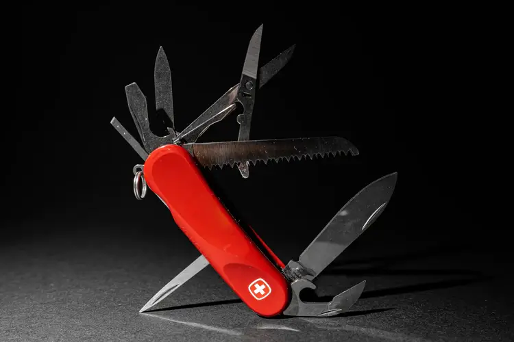

how to survive the apocalypse
We have found the top things you will need to survive the impending apocalypse. You'll find everything from backpack essentials to how to start a fire. Check out the rest of our site for camp set-up tips and how to defend yourself against The Infected.

Top Ten Backpack Essentials

1. Military Tactical Backpack
Though it is not ideal, there is a good chance that you will be moving a lot during the apocalypse or at the very least going out for supplies, once you no longer have stuff in your bunker. This massive assault backpack can help you collect three days of supplies. The durable bag has a host of features that include heavy-duty zippers and utility-style cord pulls, Side and front load compression system.
2. Swiss Army Pocket Knife
Even at the moment, you should be carrying a Swiss Army Knife around as these handy multi-tools literally embody the “be prepared” mantra. Swiss Army Knives are easy to use and are mini mobile toolboxes that will allow you to tackle the task on the fly. A swiss army knife is a given during the apocalypse.

3. Water-resistant Torchlight
A tactical weapon like this should be in your arsenal. In this apocalyptic world, getting a hold of a light source will be no easy feat. Even more so, finding a long-lasting light source can mean the difference between life and death when out for supplies. Binwo’s Super Bright 2000 Lumen tactical light is a water-resistant light that is going to be godsent in the apocalypse.
4. Lifesaver 4000UF Bottle
One of the first things you need to do in a survival situation is to find shelter and water. However, you are not guaranteed a clean water source when you actually find one. The Lifesaver Water Filtration Filter Bottle Purifier kit could literally save your life removing 99.9% of viruses, chemicals, bacteria, etc.
5. Compact Binoculars
Your safety out in the world will also be dependent on your ability to stay vigilant and see what is happening around you day and night. These compact binoculars will help you see at tremendous distances both in the day at night. But before you do so, make sure you find the high ground first.
6. Military Tactical Backpack
Though it is not ideal, there is a good chance that you will be moving a lot during the apocalypse or at the very least going out for supplies, once you no longer have stuff in your bunker. This massive assault backpack can help you collect three days of supplies. The durable bag has a host of features that include heavy-duty zippers and utility-style cord pulls, Side and front load compression system.
1. Military Tactical Backpack
Though it is not ideal, there is a good chance that you will be moving a lot during the apocalypse or at the very least going out for supplies, once you no longer have stuff in your bunker. This massive assault backpack can help you collect three days of supplies. The durable bag has a host of features that include heavy-duty zippers and utility-style cord pulls, Side and front load compression system.
2. Military Tactical Backpack
Though it is not ideal, there is a good chance that you will be moving a lot during the apocalypse or at the very least going out for supplies, once you no longer have stuff in your bunker. This massive assault backpack can help you collect three days of supplies. The durable bag has a host of features that include heavy-duty zippers and utility-style cord pulls, Side and front load compression system.
1. Military Tactical Backpack
Though it is not ideal, there is a good chance that you will be moving a lot during the apocalypse or at the very least going out for supplies, once you no longer have stuff in your bunker. This massive assault backpack can help you collect three days of supplies. The durable bag has a host of features that include heavy-duty zippers and utility-style cord pulls, Side and front load compression system.
2. Military Tactical Backpack
Though it is not ideal, there is a good chance that you will be moving a lot during the apocalypse or at the very least going out for supplies, once you no longer have stuff in your bunker. This massive assault backpack can help you collect three days of supplies. The durable bag has a host of features that include heavy-duty zippers and utility-style cord pulls, Side and front load compression system.